Vào tab Board để theo dõi story theo trạng thái; kéo thả để cập nhật.
Mở một Story để xem mô tả, subtask, người thực hiện và estimate.
Cuối ngày, vào Báo cáo công việc để nộp daily report.
Nghi thức Scrum đầy đủ
Scrum là khung làm việc (framework) chia công việc theo từng chu kỳ ngắn gọi là Sprint (thường 1–2 tuần). Mỗi Sprint đội cam kết hoàn thành một phần việc, cuối kỳ nhìn lại và cải thiện liên tục. Phần này mô tả đầy đủ các nghi thức Scrum (vai trò · tài liệu · sự kiện). Cách thao tác cụ thể trên phần mềm nằm ở mục Hướng dẫn Tool Kazuo.
A. Ba vai trò
Product Owner (PO) — chủ sản phẩm: quyết định làm gì trước/sau, sắp xếp độ ưu tiên Backlog, đại diện cho quyền lợi khách hàng.
Scrum Master (SM) — người điều phối: đảm bảo đội theo đúng quy trình, tổ chức các buổi họp, gỡ vướng mắc (impediments) cho đội.
Nhóm phát triển (Dev Team) — người trực tiếp làm ra sản phẩm: tự tổ chức, cùng nhau cam kết và hoàn thành công việc trong Sprint.
B. Ba tài liệu (Artifacts)
Product Backlog — kho toàn bộ việc cần làm của sản phẩm, sắp theo độ ưu tiên. PO quản lý.
Sprint Backlog — danh sách việc đội chọn làm trong Sprint hiện tại + kế hoạch thực hiện.
Increment — phần sản phẩm hoàn chỉnh, dùng được, làm ra sau mỗi Sprint (thỏa Definition of Done).
Definition of Done (DoD) — "thế nào là xong"
Tiêu chuẩn chung cả đội thống nhất để coi một việc là thật sự hoàn thành (vd: code xong + test pass + review + merge). Mọi Story phải đạt DoD mới được tính Done — tránh cãi nhau "xong rồi mà chưa xong".
C. Năm sự kiện (Events)
1. Sprint — chu kỳ làm việc
Khung thời gian cố định (1–2 tuần) chứa tất cả các sự kiện còn lại. Sprint này kết thúc thì Sprint sau bắt đầu ngay, không nghỉ giữa chừng. Độ dài Sprint giữ ổn định để đội có nhịp.
2. Sprint Planning — họp lập kế hoạch (đầu Sprint)
Ai: cả đội (PO + SM + Dev). Thời lượng: ~2 giờ cho Sprint 1 tuần.
Trả lời 2 câu: Sprint này làm được gì? (chọn Story ưu tiên cao) và Làm bằng cách nào? (chia subtask, ước lượng).
Chốt Sprint Goal (mục tiêu Sprint) + Sprint Backlog. Không nhận quá sức đội.
3. Daily Scrum — họp đứng 15 phút mỗi ngày
Đầu ngày cả đội họp nhanh (đứng, đúng 15 phút, cùng giờ & chỗ cố định) để đồng bộ tiến độ và gỡ vướng sớm. Mỗi người trả lời 3 câu hỏi:
Hôm qua tôi đã làm gì? (đẩy được việc nào gần Done)
Hôm nay tôi sẽ làm gì? (tập trung việc nào)
Tôi đang vướng gì? (ai/cái gì đang cản, cần hỗ trợ gì)
Quy tắc giữ Daily gọn trong 15 phút:
Đúng giờ, đúng 15 phút — đứng họp để không lan man.
Chỉ đồng bộ + nêu vướng mắc, KHÔNG giải quyết chi tiết tại chỗ.
Vấn đề cần bàn sâu → ghi "họp sau" (parking lot), hẹn đúng người liên quan.
Do Dev Team chủ trì; Scrum Master đảm bảo họp đúng khuôn khổ.
4. Sprint Review — họp rà kết quả (cuối Sprint)
Ai: cả đội + người liên quan (khách hàng/stakeholder nếu có). Thời lượng: ~1 giờ.
Đội demo phần đã hoàn thành (Increment), so với Sprint Goal.
Thu thập phản hồi → điều chỉnh Product Backlog cho phù hợp.
Việc chưa xong: đưa lại Backlog hoặc chuyển sang Sprint sau.
5. Sprint Retrospective — họp cải tiến (sau Review)
Ai: nội bộ đội (PO + SM + Dev). Thời lượng: ~45 phút.
Đội bàn 3 điều: Cái gì tốt (giữ lại) · Cái gì chưa tốt (cần sửa) · Hành động cải thiện cho Sprint sau.
Chốt 1–2 hành động cụ thể để làm ngay kỳ tới — tránh bàn suông.
+ Backlog Refinement — chải chuốt Backlog (làm liên tục)
Không phải sự kiện cố định, nhưng nên làm đều đặn giữa Sprint: PO + đội cùng làm rõ, chia nhỏ, ước lượng và sắp lại ưu tiên các Story sắp tới — để buổi Planning kỳ sau diễn ra nhanh gọn.
Quy tắc vàng cho cả đội (khi dùng Kazuo):
Mọi Story vào Sprint phải có người thực hiện + estimate.
Trạng thái trên Board phải khớp thực tế — cập nhật ngay khi có thay đổi.
Story chưa xong được phép cross sang Sprint sau — kéo sang Sprint kế để làm tiếp.
Kết nối MCP — cho AI (Claude/ChatGPT) đọc dữ liệu Kazuo
MCP (Model Context Protocol) là cách để công cụ AI như Claude hay ChatGPT kết nối thẳng vào Kazuo, đọc dữ liệu công việc của bạn bằng lời nói tự nhiên — ví dụ "việc của tôi tuần này", "sprint còn task nào chưa xong". Bạn không cần mở web bấm tay nữa. Mã kết nối chỉ có quyền ĐỌC, không sửa được dữ liệu — nên an toàn.
Bước 1 — Tạo mã kết nối (token) của bạn
Vào Hồ sơ cá nhân (menu trái, mục Cài đặt) — hoặc mở https://kazuotask.allbase.in/w/kazuo/settings/profile.
Kéo xuống cuối trang, tới mục "Mã kết nối MCP (Claude / ChatGPT)".
Bấm nút "Tạo mã mới" (góc phải).
Đặt Tên gợi nhớ (vd: "Claude máy làm việc") rồi bấm "Tạo mã".
Copy ngay chuỗi token hiện ra và lưu chỗ an toàn — token đầy đủ chỉ hiện một lần, sau đó chỉ xem được vài ký tự đầu.
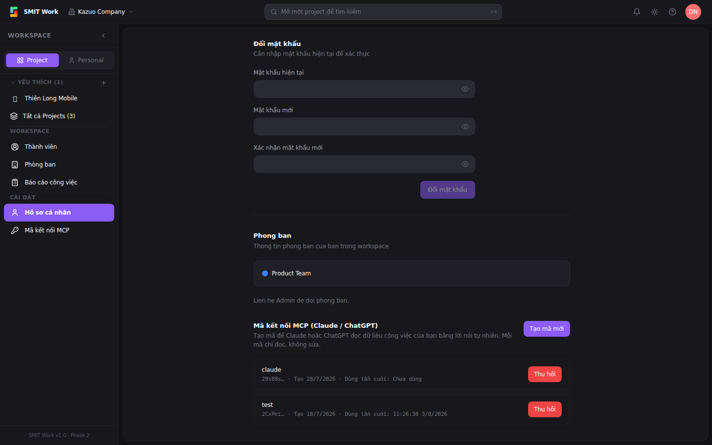
Mục "Mã kết nối MCP" ở cuối trang Hồ sơ cá nhân — bấm "Tạo mã mới".
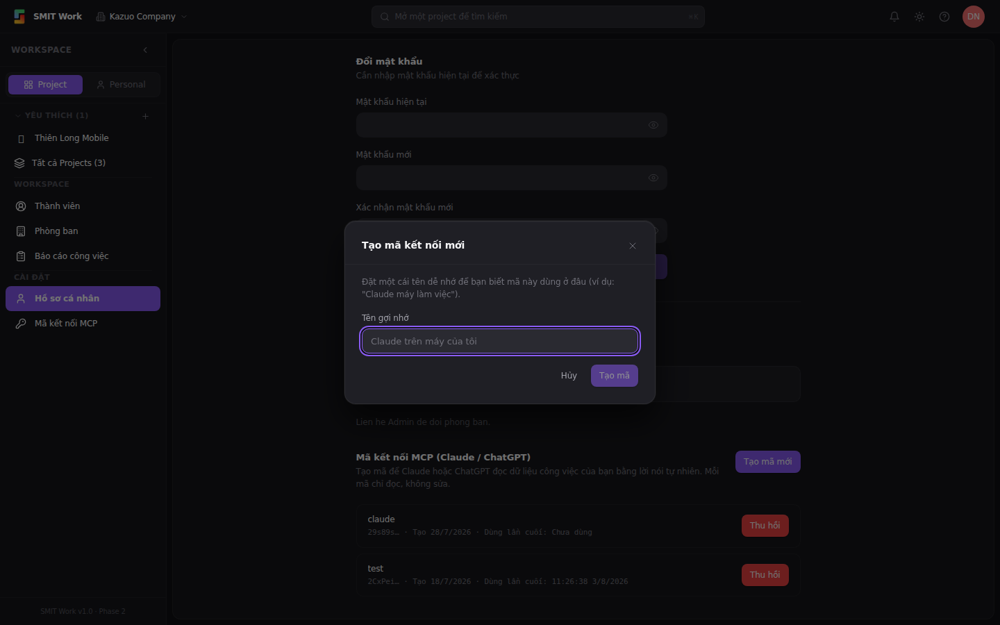
Đặt tên gợi nhớ rồi bấm "Tạo mã".
Lưu ý bảo mật:
Token = chìa khóa vào tài khoản bạn. Không chia sẻ, không commit lên Git.
Mỗi thiết bị/công cụ nên tạo một mã riêng (dễ thu hồi khi cần).
Nghi ngờ lộ mã → vào lại trang trên bấm "Thu hồi" để vô hiệu hóa ngay.
Bước 2 — Thông tin cần để kết nối
URL máy chủ MCP:https://kazuotask.allbase.in/mcp
Giao thức: HTTP (Streamable HTTP)
Xác thực: Header Authorization: Bearer <token của bạn>
Bước 3 — Cấu hình theo từng công cụ
A. Claude Code (dòng lệnh CLI)
Chạy 1 lệnh trong terminal (thay <TOKEN> bằng mã của bạn):
claude mcp add --scope user --transport http kazuotask \
https://kazuotask.allbase.in/mcp \
--header "Authorization: Bearer <TOKEN>"
Kiểm tra: claude mcp list → thấy kazuotask ✔ Connected là xong.
Mở lại IDE, bật server kazuotask trong phần cài đặt MCP.
D. ChatGPT
Với bản ChatGPT hỗ trợ Connectors / MCP (thường là gói trả phí):
Vào Settings → Connectors (hoặc mục MCP) → Add / New connector.
Dán URL:https://kazuotask.allbase.in/mcp.
Phần xác thực chọn Bearer token và dán mã của bạn.
Lưu và bật connector kazuotask.
Bước 4 — Dùng thử
Sau khi kết nối, thử hỏi AI bằng lời tự nhiên:
"Xem việc của tôi tuần này trên Kazuo"
"Sprint hiện tại của dự án Thiên Long Mobile còn task nào chưa xong?"
"Tổng hợp tình hình dự án giúp tôi"
Không kết nối được?
Sai token → tạo lại mã mới, copy đúng cả chuỗi (không dư dấu cách).
Kiểm tra URL đúng https://kazuotask.allbase.in/mcp (có /mcp ở cuối).
Mã đã bị Thu hồi hoặc admin tắt quyền ở mục Thành viên → tạo mã mới / liên hệ admin.
Hướng dẫn Tool Kazuo
Phần này hướng dẫn thao tác trên phần mềm Kazuo (SMIT Work): mỗi màn hình kèm ảnh chụp thật và các bước bấm cụ thể. Ánh xạ nghi thức Scrum ở trên vào đúng nút bấm trong tool.
Workspace 6
Tất cả Projects (3)
Danh sách dự án: chọn dự án để vào backlog, board, sprint bên trong.
Thao tác
Bấm một dự án để mở vào bên trong (backlog, board, sprint).
Bấm "+ New Project" để tạo dự án mới.
Xem nhanh tiến độ, sprint, số task, deadline ở mỗi thẻ.
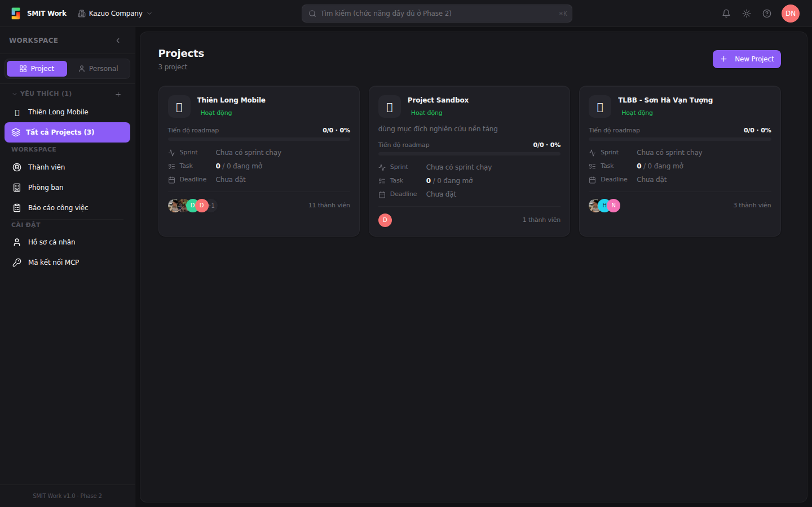
Thành viên
Thành viên: danh sách người trong workspace và tải công việc từng người.
Thao tác
Xem danh sách thành viên workspace và vai trò.
Tìm thành viên theo tên.
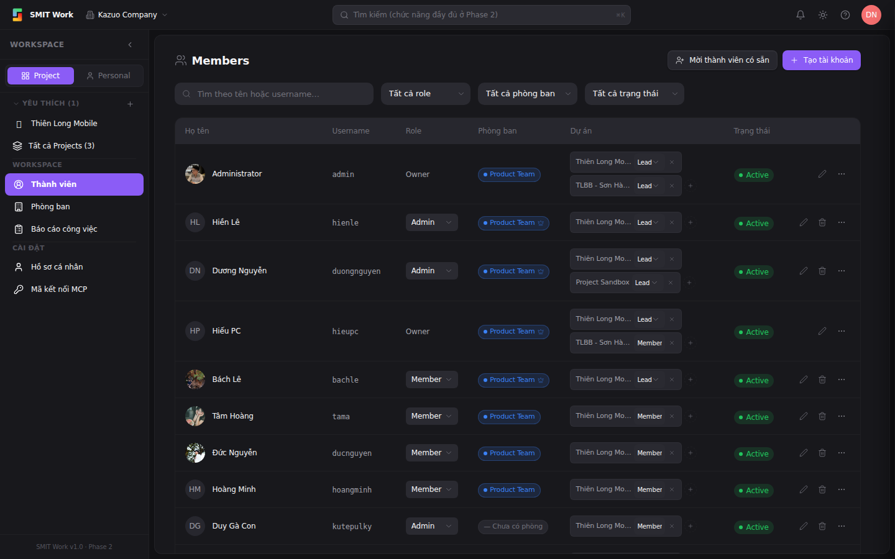
Phòng ban
Phòng ban: nhóm thành viên theo bộ phận; story và sprint được lọc theo phòng ban.
Thao tác
Xem các phòng ban (Product Team, Vận Hành, Marketing).
Chọn đúng phòng ban để lọc story/sprint tương ứng.
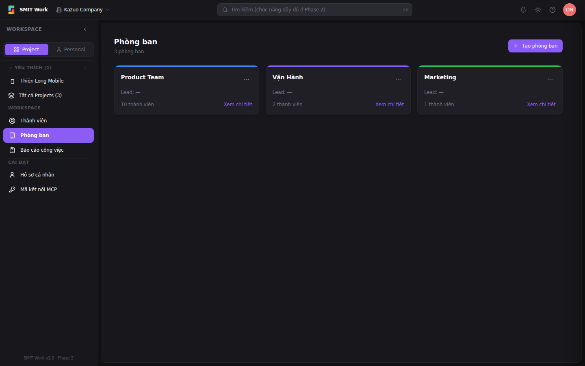
Báo cáo công việc
Báo cáo công việc: viết daily report (hôm qua / hôm nay / vướng mắc); xem ai nộp trễ/chưa nộp.
Thao tác
Điền 3 mục: Hôm qua làm gì · Hôm nay làm gì · Vướng mắc.
Đánh dấu nếu có task trễ, rồi bấm lưu.
Xem ai đã nộp / nộp trễ / chưa nộp báo cáo.
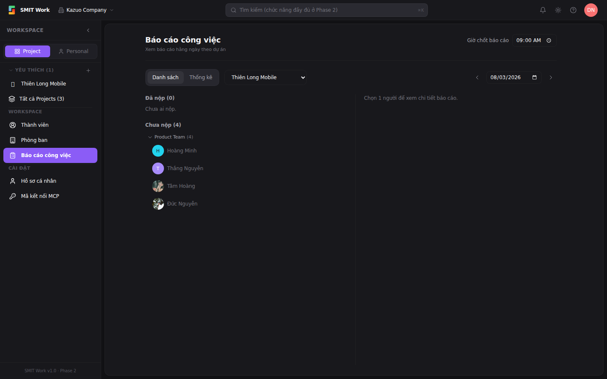
Hồ sơ cá nhân
Hồ sơ cá nhân: đổi thông tin tài khoản, mật khẩu, tùy chọn cá nhân.
Thao tác
Đổi tên, ảnh đại diện, thông tin cá nhân.
Đổi mật khẩu và tùy chọn tài khoản.
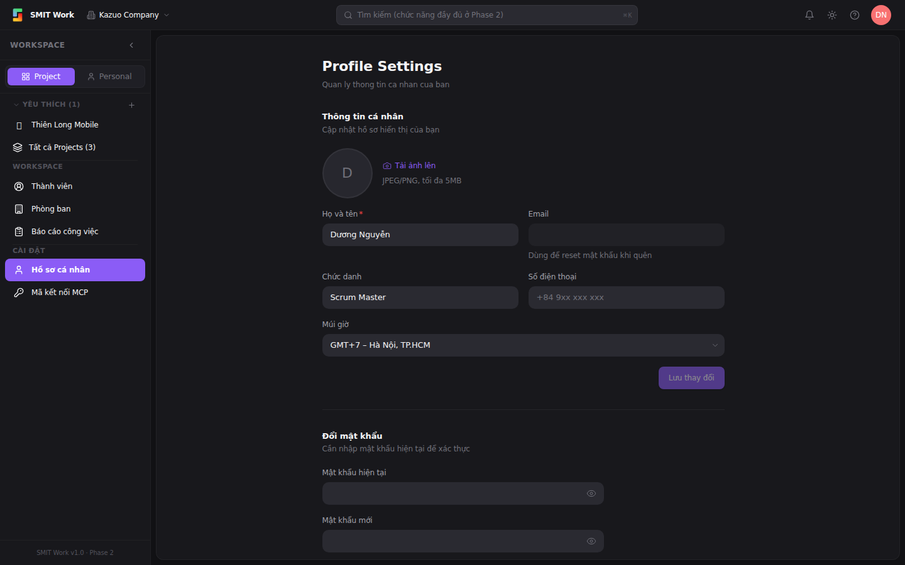
Mã kết nối MCP
Mã kết nối MCP: token để kết nối công cụ AI (như Claude) vào Kazuo qua giao thức MCP.
Thao tác
Copy token MCP.
Dán vào công cụ AI (như Claude) để kết nối với Kazuo.
Giữ token bí mật — không chia sẻ, không commit.
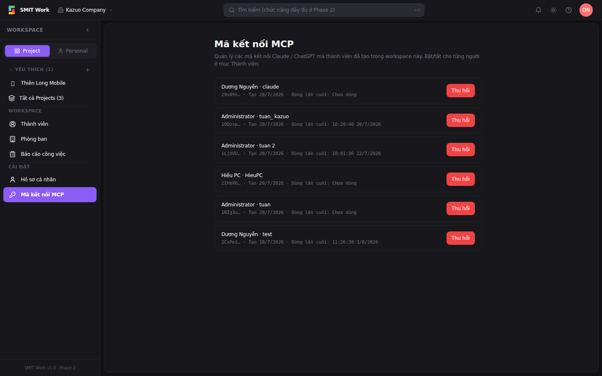
Trong dự án 9
Roadmap (Product Team)
Roadmap: lộ trình tính năng theo thời gian, nhìn tổng thể kế hoạch dài hạn của dự án.
Thao tác
Xem lộ trình theo năm; lọc theo quý (Q1–Q4), phòng ban, trạng thái.
Bấm "Tạo Roadmap" để thêm mốc/kế hoạch mới.
Dùng để nhìn tổng thể kế hoạch dài hạn của dự án.
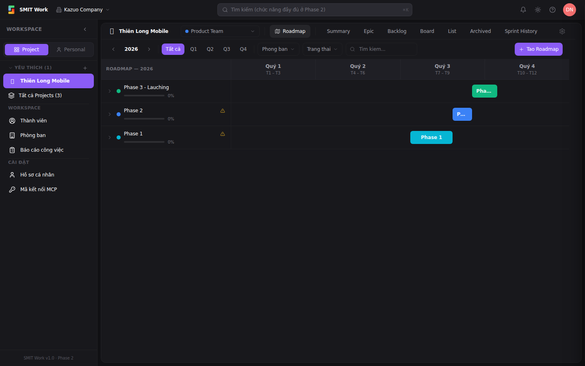
Summary (Product Team)
Summary: tổng quan dự án — tiến độ sprint, số story theo trạng thái, hoạt động gần đây.
Thao tác
Xem tiến độ sprint và số story theo trạng thái.
Theo dõi hoạt động gần đây của dự án.
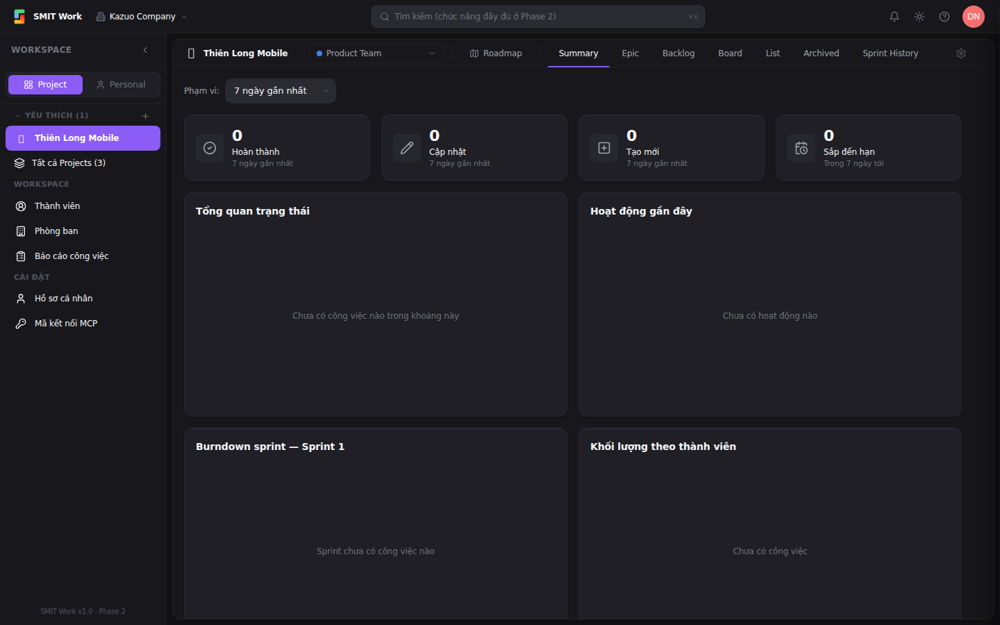
Epic (Product Team)
Epic: nhóm nhiều story lớn theo tính năng, để tổ chức backlog rõ ràng.
Thao tác
Bấm "Create epic" để tạo epic mới.
Bấm vào một epic để xem các story bên trong.
Gắn Story vào Epic: mở Story → chọn Epic ở ô "Epic"; hoặc khi tạo Story mới thì chọn Epic ngay trong hộp thoại.
Ở Backlog, cột trái liệt kê các Epic — bấm để lọc story theo từng Epic.
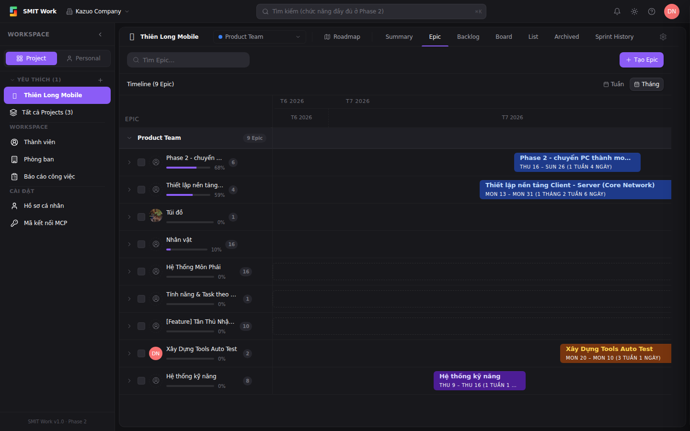
Backlog (Product Team)
Backlog: kho toàn bộ story chưa/đang làm, gom theo Epic. Nơi tạo story mới và kéo story vào sprint.
Thao tác
Bấm "Tạo Issue" (góc phải) → chọn Story/Epic... để tạo việc mới.
Bấm "Create epic" (cột trái) để tạo nhóm tính năng lớn.
Bấm "Tạo Sprint", điền tên + ngày + mục tiêu; kéo story vào sprint.
Bấm "Bắt đầu" ở thẻ sprint để chạy; bấm tên story để mở chi tiết.
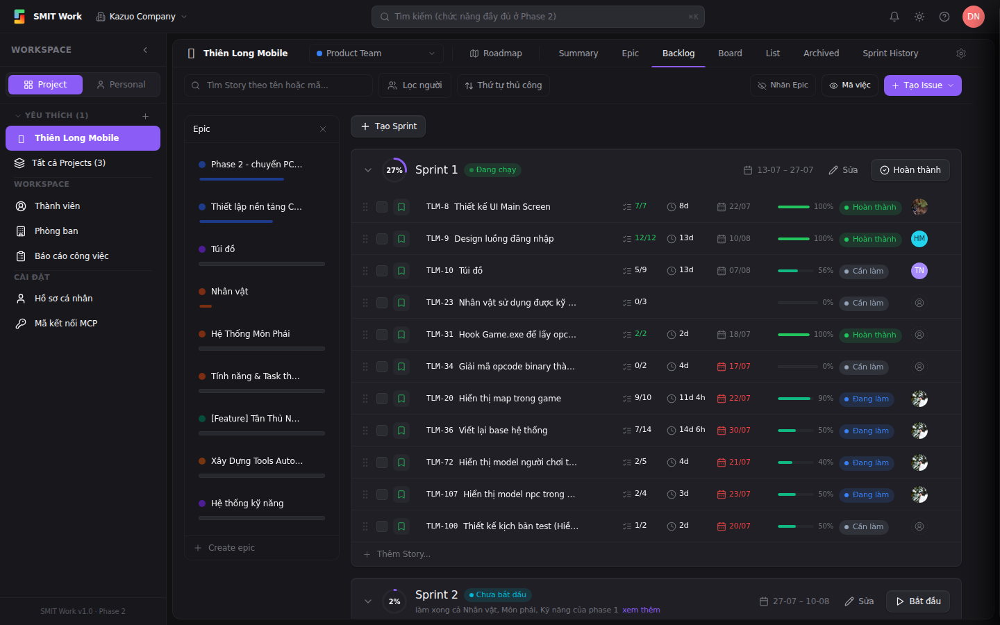
Board (Product Team)
Board (Kanban): story của sprint đang chạy, xếp theo cột trạng thái. Kéo thả thẻ để đổi trạng thái.
Thao tác
Kéo thả thẻ story giữa các cột: Cần làm → Đang làm → Hoàn thành.
Bấm vào thẻ để mở màn Chi tiết Story.
Lưu ý: Board chỉ hiện khi có sprint đang chạy.
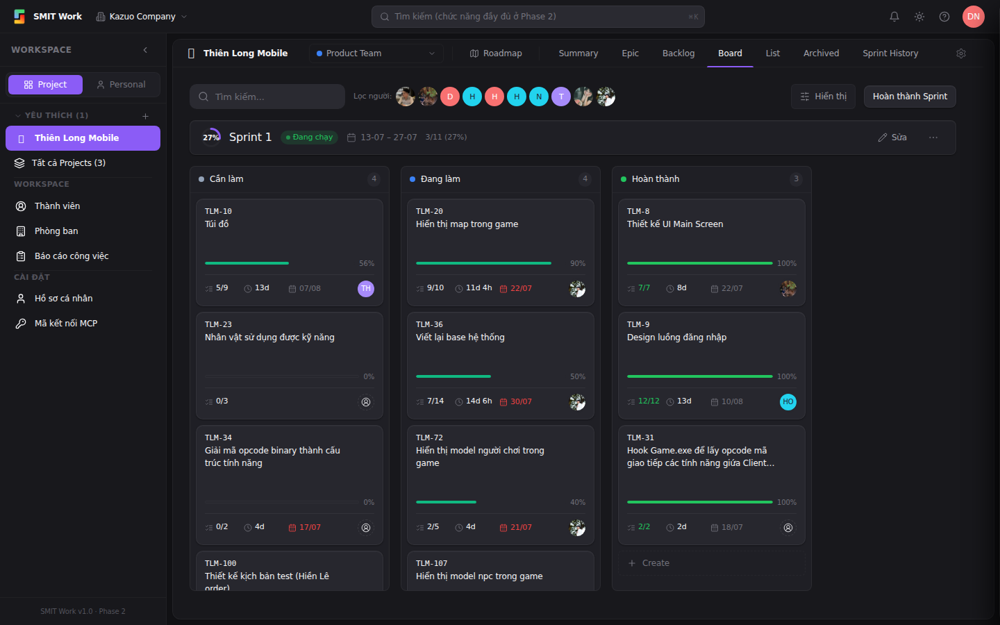
List (Product Team)
List: xem story dạng bảng, tiện lọc và sắp xếp nhanh theo cột.
Thao tác
Xem toàn bộ story dạng bảng.
Lọc / sắp xếp theo cột (trạng thái, người, ngày...).
Bấm một dòng để mở chi tiết story.
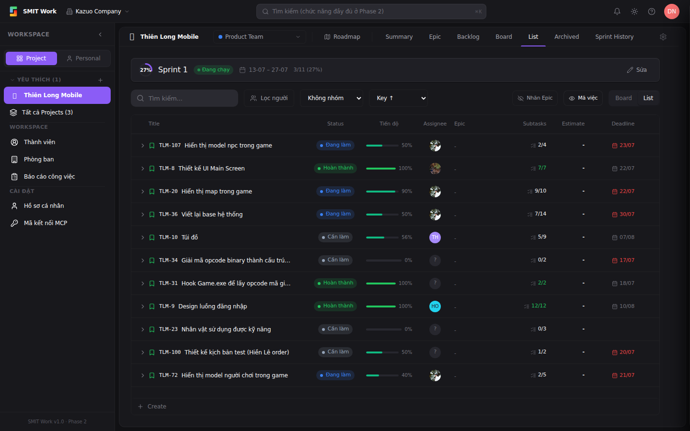
Archived (Product Team)
Archived: các story đã lưu trữ (ẩn khỏi backlog nhưng vẫn tra cứu được).
Thao tác
Xem các story đã lưu trữ (ẩn khỏi backlog).
Khôi phục story khi cần dùng lại.
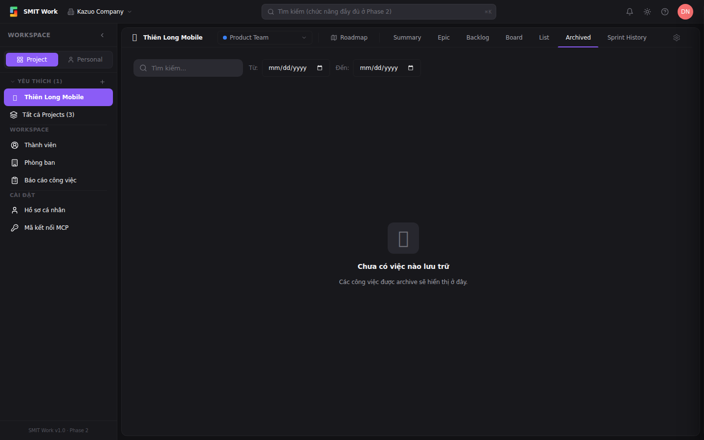
Sprint History (Product Team)
Sprint History: lịch sử các sprint đã chạy để nhìn lại tiến độ và velocity.
Thao tác
Xem lại các sprint đã chạy.
Đánh giá tốc độ (velocity) của đội qua từng kỳ.
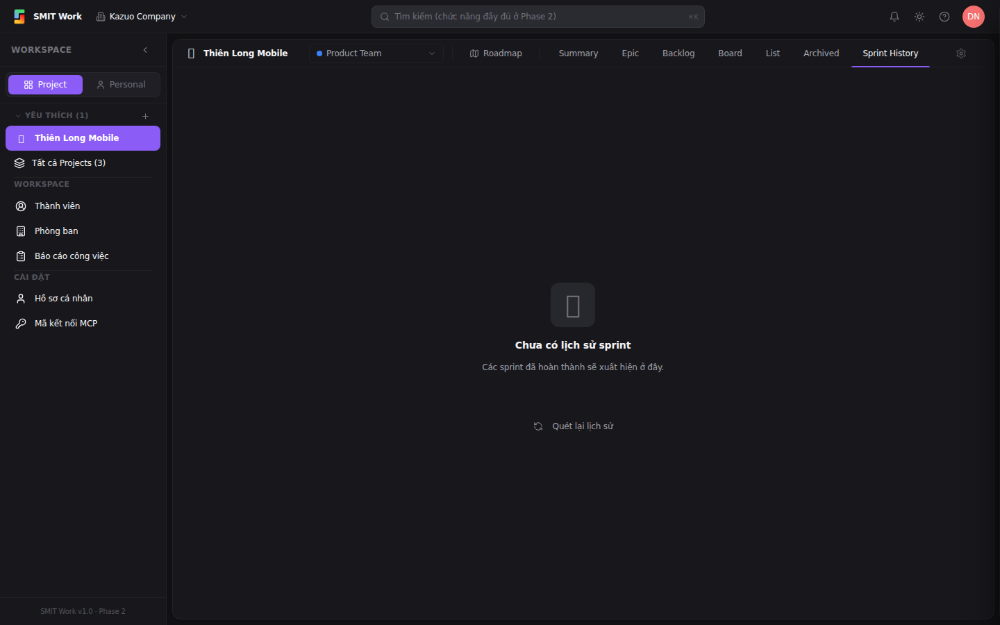
Chi tiết Story
Chi tiết Story: chỉnh Trạng thái, Ưu tiên, Ngày bắt đầu, Estimate, người Thực hiện, Nhãn; viết mô tả; thêm/đánh dấu Subtask. Đây là màn làm việc chính hằng ngày.
Thao tác
Bấm từng ô (Trạng thái, Ưu tiên, Ngày bắt đầu, Estimate, Thực hiện) để đổi giá trị — lưu tự động.
Viết mô tả + tiêu chí hoàn thành ở ô soạn thảo (có thể chuyển Markdown).
Bấm "+ Thêm subtask" để chia việc nhỏ; tick ô để đánh dấu hoàn thành.
Bấm "Đóng" khi xong.
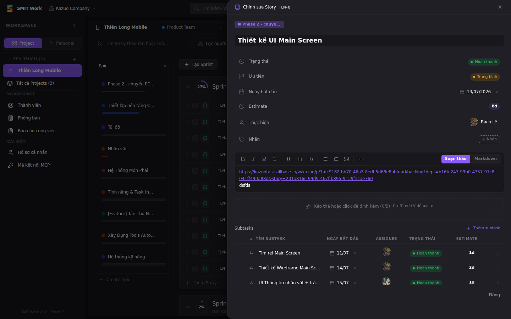
Thao tác 2
Tạo Issue
Hộp thoại Tạo Issue: chọn loại (Cross Story / Story / Subtask / Epic), điền phòng ban, trạng thái, ưu tiên, ngày, estimate, người thực hiện rồi bấm Tạo.
Thao tác
Chọn loại: Cross Story / Story / Subtask / Epic.
Chọn Phòng ban, đặt tên việc.
Chọn Trạng thái, Ưu tiên, Ngày bắt đầu, Estimate, Người thực hiện.
Gắn Story vào Epic bằng ô "Epic" trong hộp thoại (chọn epic có sẵn).
Viết mô tả rồi bấm "Tạo" (hoặc "Hủy" để bỏ).
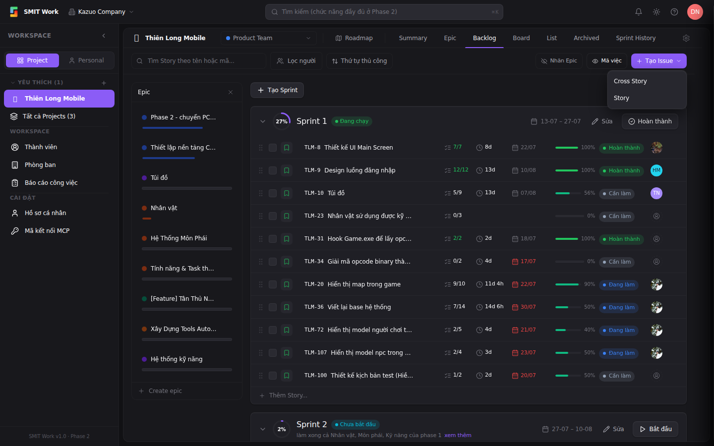
Hoàn thành Sprint
Hộp thoại Hoàn thành Sprint: khi đóng sprint, các story chưa Done được chọn để "Chuyển về Backlog" hoặc "Chuyển sang Sprint khác" — không lo mất việc dang dở.
Thao tác
Ở tab Backlog, bấm "Hoàn thành" trên thẻ sprint đang chạy.
Hộp thoại báo số issue chưa Done và cho 2 lựa chọn:
• "Chuyển về Backlog" — story chưa xong quay về backlog để lên kế hoạch lại.
• "Chuyển sang Sprint khác" — story chưa xong dồn sang sprint đã tạo.
Chọn 1 phương án rồi bấm "Hoàn thành Sprint".
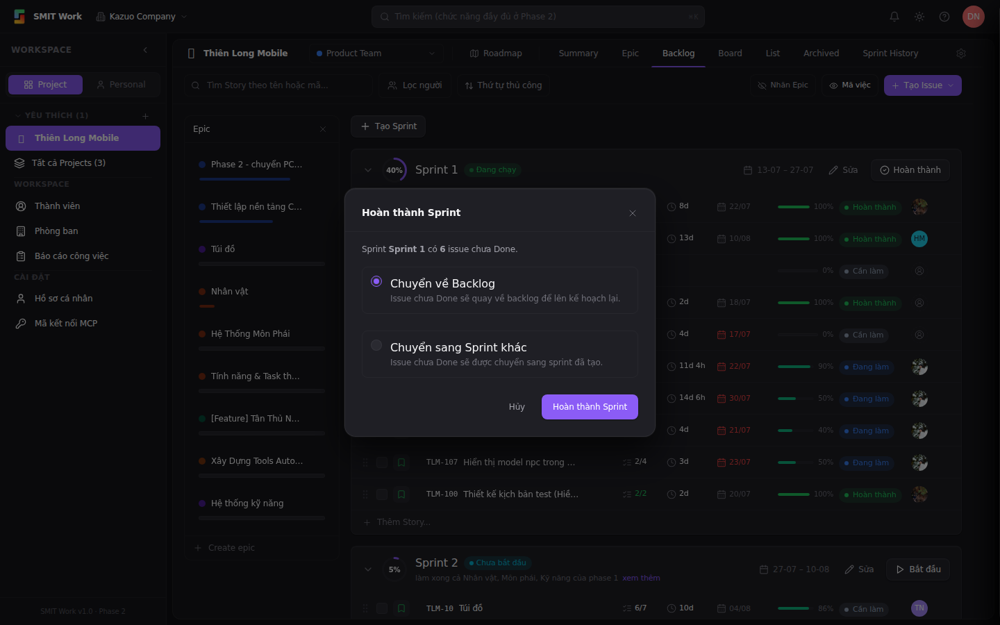
Cá nhân 1
My Work
My Work (Công việc của tôi): xem việc của chính bạn (Hôm nay / Quá hạn / Tuần này / Đang làm) và tải công việc của từng đồng đội.
Thao tác
Xem nhanh 4 ô: Hôm nay / Quá hạn / Tuần này / Đang làm.
Chuyển tab: Việc trong sprint / ngoài sprint / lịch sử.